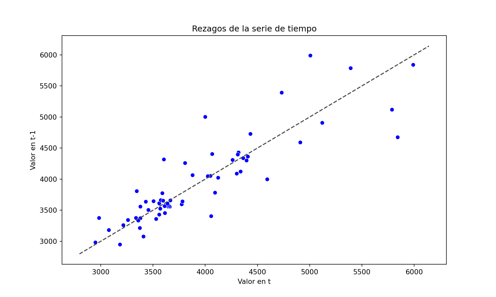
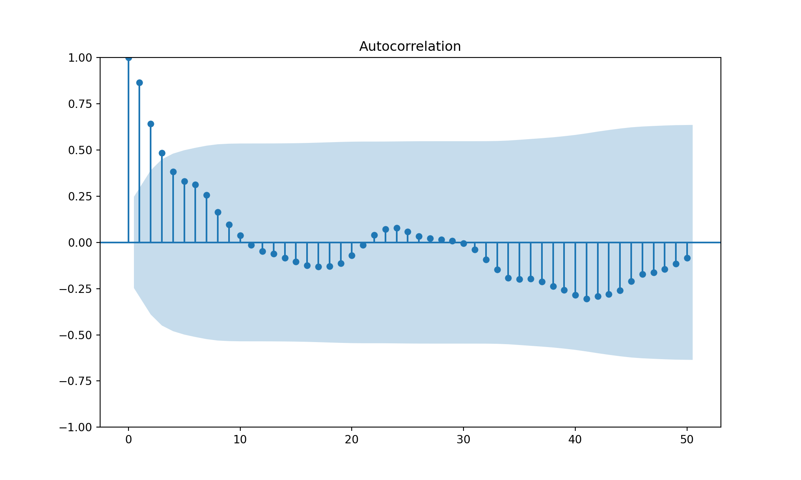
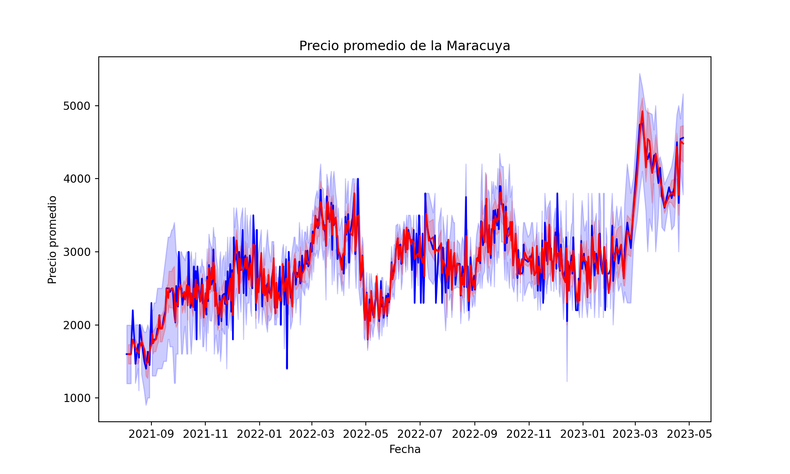
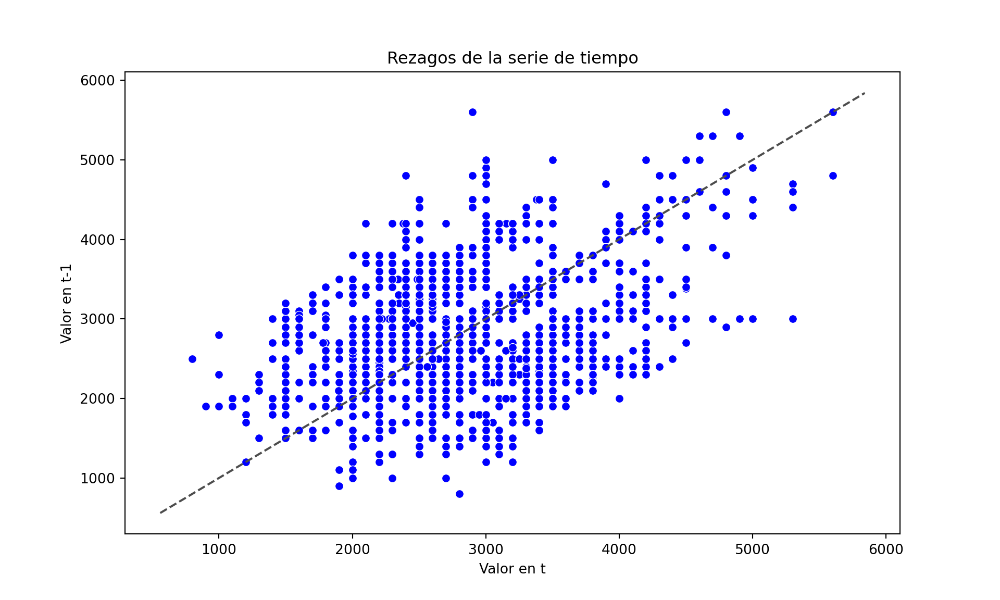
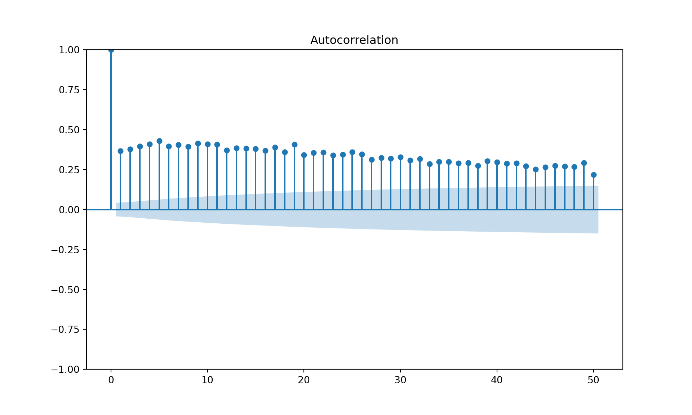

3 Analisis de la dinamica de los datos
3.1 Estructura de los datos en series de tiempo (precios Valle)
import seaborn as sns
from statsmodels.tsa.seasonal import seasonal_decompose
import statsmodels.api as sm
from statsmodels.graphics.tsaplots import plot_acf
# Eliminar valores faltantes
df_precios_historicos.fillna(df_precios_historicos.mean(), inplace=True)
# Calcular promedio móvil## <string>:1: FutureWarning: DataFrame.mean and DataFrame.median with numeric_only=None will include datetime64 and datetime64tz columns in a future version.df_precios_historicos['promedio_movil'] = df_precios_historicos['prom_valle'].rolling(window=3).mean()
# Gráfico de la serie de tiempo con el promedio móvil
fig, ax = plt.subplots(figsize=(10, 6))
sns.lineplot(data=df_precios_historicos, x='fecha', y='prom_valle', color='blue', ax=ax)
sns.lineplot(data=df_precios_historicos, x='fecha', y='promedio_movil', color='red', ax=ax)
ax.set(title='Precio promedio de la Maracuya', xlabel='Fecha', ylabel='Precio promedio')
plt.show()
# Gráfico de rezagos
fig, ax = plt.subplots(figsize=(10, 6))
sns.scatterplot(data=df_precios_historicos, x='prom_valle', y=df_precios_historicos['prom_valle'].shift(1), color='blue')
ax.plot(ax.get_xlim(), ax.get_ylim(), ls="--", c=".3") # Agregar línea diagonal
ax.set(title='Rezagos de la serie de tiempo', xlabel='Valor en t', ylabel='Valor en t-1')
plt.show()
# Obtener la serie de tiempo
serie = df_precios_historicos['prom_valle']
# Gráfico de autocorrelación
fig, ax = plt.subplots(figsize=(10, 6))
plot_acf(serie, ax=ax, lags=50)
plt.show()
3.2 Estructura de los datos en series de tiempo (precios Passion)
import seaborn as sns
from statsmodels.tsa.seasonal import seasonal_decompose
import statsmodels.api as sm
from statsmodels.graphics.tsaplots import plot_acf
# Eliminar valores faltantes
df_precios_passion.fillna(df_precios_passion.mean(), inplace=True)
# Calcular promedio móvil## <string>:1: FutureWarning: DataFrame.mean and DataFrame.median with numeric_only=None will include datetime64 and datetime64tz columns in a future version.
## <string>:1: FutureWarning: Dropping of nuisance columns in DataFrame reductions (with 'numeric_only=None') is deprecated; in a future version this will raise TypeError. Select only valid columns before calling the reduction.df_precios_passion['promedio_movil'] = df_precios_passion['VALOR KILO'].rolling(window=3).mean()
# Gráfico de la serie de tiempo con el promedio móvil
fig, ax = plt.subplots(figsize=(10, 6))
sns.lineplot(data=df_precios_passion, x='FECHA', y='VALOR KILO', color='blue', ax=ax)
sns.lineplot(data=df_precios_passion, x='FECHA', y='promedio_movil', color='red', ax=ax)
ax.set(title='Precio promedio de la Maracuya', xlabel='Fecha', ylabel='Precio promedio')
plt.show()
# Gráfico de rezagos
fig, ax = plt.subplots(figsize=(10, 6))
sns.scatterplot(data=df_precios_passion, x='VALOR KILO', y=df_precios_passion['VALOR KILO'].shift(1), color='blue')
ax.plot(ax.get_xlim(), ax.get_ylim(), ls="--", c=".3") # Agregar línea diagonal
ax.set(title='Rezagos de la serie de tiempo', xlabel='Valor en t', ylabel='Valor en t-1')
plt.show()
# Obtener la serie de tiempo
serie = df_precios_passion['VALOR KILO']
# Gráfico de autocorrelación
fig, ax = plt.subplots(figsize=(10, 6))
plot_acf(serie, ax=ax, lags=50)
plt.show()